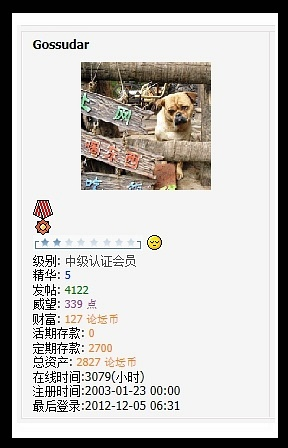

哀悼DASHA兄
昨夜今日，哀痛非常。臥不能寐，寤則感傷。
回想當年識傻兄于天涯閑閑，輾轉到超星社區、讀書園地，再到豆瓣；MSN、伊妹兒、站內信、短消息、及豆郵，時有往來，心知神交，已近十載；緣慳一面，本以爲今夏他的譯作可以出版，履滬地而暢談，但他說要到明年才出，明年一定來，不料約定永不能實現了，緣慳一面，卻成永訣。
嘆天縱其才，又妒其才！或是怜其才？
打算爲傻兄寫點文字，把十年以來傻兄予我的種種文字和記憶鉤稽出來，把傻兄一貫嚴謹治文的一面存在一處，展于同好，以追英魂。
http://mylib.duxiu.com/dasha
http://www.readfree.net/bbs/profile.php?action=show&uid=2423
找了好幾個地方，或可輯出不少交往記錄。請待我一一整理：
发件人： dasha 2006-01-26 11:43:06
收件人： giufa
内 容： 求问子不，中国皇室成员彼此的称谓可有书籍记载（不要满清的）
发件人： giufa 2006-01-26 12:38:14
收件人： dasha
内 容： 惭愧, 称谓之类, 俺只翻过<<称谓录>>一类, 想必兄早就查过的了. 我找找吧. 兄出的题目, 子不好几次都交了白卷:$:$ 正在赶一篇文章, 如若今晚可以完成 (明日回乡过年哉) , 呈兄批.
发件人： giufa 2006-01-27 09:29:23
收件人： dasha
内 容： 求教了一位治文字的先生，他回信告未見有專門涉及的。這是個有趣的問題，我猜實錄之類的文本中可能有一些記錄。不過，是否成制——以及留下記載，頗難說。 昨天向兄提及拙文，本意也在激勵自己不再拖沓，完成它。但如今還是尾大不掉，還在寫:$
发件人： dasha 2006-01-27 11:43:04
收件人： giufa
内 容： 数种称谓录Dasha当然都查考过了，自然是没有的。散落在宋元白话小说里的，虽不规范，可能还有一些。
回想當年識傻兄于天涯閑閑，輾轉到超星社區、讀書園地，再到豆瓣；MSN、伊妹兒、站內信、短消息、及豆郵，時有往來，心知神交，已近十載；緣慳一面，本以爲今夏他的譯作可以出版，履滬地而暢談，但他說要到明年才出，明年一定來，不料約定永不能實現了，緣慳一面，卻成永訣。
嘆天縱其才，又妒其才！或是怜其才？
打算爲傻兄寫點文字，把十年以來傻兄予我的種種文字和記憶鉤稽出來，把傻兄一貫嚴謹治文的一面存在一處，展于同好，以追英魂。
http://mylib.duxiu.com/dasha
http://www.readfree.net/bbs/profile.php?action=show&uid=2423
 |
|  |
找了好幾個地方，或可輯出不少交往記錄。請待我一一整理：
发件人： dasha 2006-01-26 11:43:06
收件人： giufa
内 容： 求问子不，中国皇室成员彼此的称谓可有书籍记载（不要满清的）
发件人： giufa 2006-01-26 12:38:14
收件人： dasha
内 容： 惭愧, 称谓之类, 俺只翻过<<称谓录>>一类, 想必兄早就查过的了. 我找找吧. 兄出的题目, 子不好几次都交了白卷:$:$ 正在赶一篇文章, 如若今晚可以完成 (明日回乡过年哉) , 呈兄批.
发件人： giufa 2006-01-27 09:29:23
收件人： dasha
内 容： 求教了一位治文字的先生，他回信告未見有專門涉及的。這是個有趣的問題，我猜實錄之類的文本中可能有一些記錄。不過，是否成制——以及留下記載，頗難說。 昨天向兄提及拙文，本意也在激勵自己不再拖沓，完成它。但如今還是尾大不掉，還在寫:$
发件人： dasha 2006-01-27 11:43:04
收件人： giufa
内 容： 数种称谓录Dasha当然都查考过了，自然是没有的。散落在宋元白话小说里的，虽不规范，可能还有一些。
![转发 23](https://www.douban.com/share/recommend?sanity_key=_9cbcf&apikey=&object_kind=1015&name=%E5%93%80%E6%82%BCDASHA%E5%85%84&image=https%3A%2F%2Fimg1.doubanio.com%2Fview%2Fnote%2Fsmall%2Fpublic%2Fp7511719.jpg&target_action=0&redir=https%3A%2F%2Fwww.douban.com%2Fnote%2F251088012%2F&object_id=251088012&heading=%E8%BD%AC%E5%8F%91%E5%88%B0%E8%B1%86%E7%93%A3&target_type=rec&btn_text=%E8%BD%AC%E5%8F%91&href=https%3A%2F%2Fwww.douban.com%2Fnote%2F251088012%2F&action_props=%7B%22note_url%22%3A%22https%3A%5C%2F%5C%2Fwww.douban.com%5C%2Fnote%5C%2F251088012%5C%2F%22%2C%22note_title%22%3A%22%E5%93%80%E6%82%BCDASHA%E5%85%84%22%2C%22author_name%22%3A%22%E9%A9%AC%E8%BE%BE%2Bs%2B%E7%8B%90%E7%8C%B4%22%7D&curl=&type=com.douban.people&properties=%7B%22href%22%3A%22https%3A%5C%2F%5C%2Fwww.douban.com%5C%2Fpeople%5C%2Fgiufa%5C%2F%22%2C%22name%22%3A%22%E9%A9%AC%E8%BE%BE%2Bs%2B%E7%8B%90%E7%8C%B4%22%2C%22uid%22%3A%221604927%22%7D&desc=%E6%98%A8%E5%A4%9C%E4%BB%8A%E6%97%A5%EF%BC%8C%E5%93%80%E7%97%9B%E9%9D%9E%E5%B8%B8%E3%80%82%E8%87%A5%E4%B8%8D%E8%83%BD%E5%AF%90%EF%BC%8C%E5%AF%A4%E5%89%87%E6%84%9F%E5%82%B7%E3%80%82+%E5%9B%9E%E6%83%B3%E7%95%B6%E5%B9%B4%E8%AD%98%E5%82%BB%E5%85%84%E4%BA%8E%E5%A4%A9%E6%B6%AF%E9%96%91%E9%96%91%EF%BC%8C%E8%BC%BE%E8%BD%89%E5%88%B0%E8%B6%85%E6%98%9F%E7%A4%BE%E5%8D%80%E3%80%81%E8%AE%80%E6%9B%B8%E5%9C%92%E5%9C%B0%EF%BC%8C%E5%86%8D%E5%88%B0%E8%B1%86%E7%93%A3%EF%BC%9BMSN%E3%80%81%E4%BC%8A%E5%A6%B9%E5%85%92%E3%80%81%E7%AB%99%E5%85%A7%E4%BF%A1%E3%80%81%E7%9F%AD%E6%B6%88%E6%81%AF%E3%80%81%E5%8F%8A%E8%B1%86%E9%83%B5%EF%BC%8C%E6%99%82%E6%9C%89%E5%BE%80%E4%BE%86%EF%BC%8C%E5%BF%83%E7%9F%A5%E7%A5%9E%E4%BA%A4%EF%BC%8C%E5%B7%B2%E8%BF%91%E5%8D%81%E8%BC%89%EF%BC%9B%E7%B7%A3%E6%85%B3%E4%B8%80...){kind=link}

giufa@[已注销] 的發件箱備份：
收信: Gossudar
标题: Re:Dasha兄
时间: 2005-04-03 17:12
内容:
Quote:
呵呵，这里的规矩是不给0威望人找书的，到“新手家园”去弄1威望即可。或者，将内容告诉Dasha，Dasha..
Dasha兄, 這塊好地方是前幾天從讀書中文網的鏈接裡獲得的. 昨晚有時間過來匆匆一晃, 沒有鬧清規則就當了冒失鬼, 慙愧! 多謝兄援手. :) 集成複印的事不着急, 您有空就弄, 反正遼圖長在, Dasha兄與子不的友誼長在, 呵呵. 最近我在孔网訂到了幾種遼寧的集成, 等哪天如果兄有空去遼圖了, 請事先告訴子不一下, 我把已得的即不需要複印的遼寧集成名單給您.
兄太忙, 子不不好意思多打扰. 如果方便, Dasha兄留意找一找<<中國民間故事集成.四川卷>>的下冊可好? 讀秀的該書頁面上倒是下冊, 但子不下不來, 您上次教的 "源代碼"法子, 好象不行了.
上次您給我的那幾本故事集成省卷本對我最近的論文幫助甚大. 代表我的論文再謝謝兄:)
收信: Gossudar
标题: Dasha兄, 我已成功获得" 声望"
时间: 2005-04-04 12:43
内容: 可以按规索书了:) 有什么需要, 我直接发帖吧. 你忙你的.
收信: Gossudar
标题: 谢谢兄谢谢Poiu
时间: 2005-04-04 19:09
内容: [REQ] 中越关系史论文集_张秀民著_文史哲出版社1992年_SS号：10520481 Gossudar
2005-04-03 1 38 2005-04-04 12:46
by: poiu
:)
收信: Gossudar
标题: 古琴與西罗普郡少年
时间: 2005-04-05 17:12
内容: Dasha兄, 昨日翻您的舊帖子學習, 看到<<西羅普郡少年>>, 頗想要35頁序言的清晰版, 可否惠贈我一份? 子不見獵心喜, 已經先試圖不告而取, 但兄所提供給 "脉望" 的FTP, 似乎拒不對旁人開門. :$
還有, 我知道Dasha兄對琴道頗有深研, 您是否搜集名家的古琴CD? 我以前從中國古琴論壇的一位琴友的FTP上下載過一些如管平湖查阜西張子謙諸先生的名曲, 也不知兄感不感興趣?
收信: Gossudar
标题: Dasha兄
时间: 2005-04-12 16:59
内容: 猛然发现这两天火烧殿月部了, 俺的论文须在几天之内炮制出来. 等这风头稍过, 再向兄殷勤讨教. 兄抄送我的里尔克译事的信匆匆拜读, 颇有收获.
收信: Gossudar
标题: Re:子不，借出一本《北票资料本》
时间: 2005-09-15 15:49
内容:
Quote:
明日出差去丹东，周日可能回来。
此书32开本，A5即可复印，需要放大到A4么？借出的书是给您复印还是D..
Dasha兄, 抱歉, 久不登陆, 才见到您的消息. 我不知道我通过YAHOO回的信可收到?
正好有事叨扰, 俺的女友是一诗歌青年, 经常在诗生活翻译论坛等处潜水. 我刚刚坐办公室, 她就要求打印网上下载的译诗. 其中即有兄的大作赫然在目. 她下载或有不全, 故我觉得, 还是向兄讨一份打印最为可靠了. :)
发两个她写的书评链接, 呈兄指教:
https://www.douban.com/review/1003519/
https://www.douban.com/review/1003521/
收信: Gossudar
标题: Re:子不，借出一本《北票资料本》
时间: 2005-09-15 18:39
内容:
Quote:
北票资料扫描了1/3，今天停电，如今刚来。不知弟妹需要Dasha那些译诗，可将目录给Dasha，一些译文Da..
:$說來慙愧. 玨氏的語言能力與她的愛好之間有頗大的張力(子不也是). 好在俺們尚知恥而勇:)
目錄俟玨氏下班之後呈送. 先謝.
書話上的討論已拷貝, 戲劇很精彩, 串中場跑龍套的角色也全了, 呵呵. 最近剛剛開學, 忙得左支右拙.
北票資料本, 兄也事務繁重, 真不知說什麼好. 掃描可以廣爲散布, 嘉惠士林, 子不在此妄言代一小撮專家們感激兄的功德了.
民間文學其實於一國的文學傳統影響頗大, 而今人多有疏忽者. 因此, 兄之義舉, 意義實大實深. 子不敬禮.
天不假年 令人痛惜
是，今天翻看豆瓣的友鄰廣播和提醒，心中猶有舊習，彷彿傻兄不時鴻爪一現，或又來跟帖……
虽然我们都明白「人总是要死的」，但它真正来的时候，又是这么的突然，让人难以接受。

Dasha兄当年在超星读书社区的帖子
http://note1.ssreader.com/Forumme.asp?K=Dasha&F=W&action=S&Search.x=29&Search.y=19
我馬玄黃，肅雲如墜。周行城垣，來拾余穗。同道中俎，其傷何似。唯奠薄醪，澆彼石匮。詩人既渺，諸神靜避。玫瑰返香，如光之翅。
經fenglong兄指點路徑，從八年前超星社區的舊地翻出幾條短信，其間可見傻兄的磊落坦蕩與馬猴前身（子不、giufa）的人情圓滑:(
发件人 Giufa
主题 Dasha兄也瞩目
日期 2004-11-29 9:47:35
中国学者有认为其即旧唐书所谓可萨,唐书所谓曷萨者. 我在期刊网上曾下过两三篇相关论文. 不知Da兄需要否? 又, <<学术集林>>卷六有龚方震先生<<中亚古国可萨史迹钩沈>>一文, 亦可参看. (虽曰参看, 子不自己还不及翻过, 惭愧) 但<<学术集林>>我没有电子版.
PS: Giufa没有超星卡, 短信一栏似有问题. 此信可否送达? 不行的话, 只好借用另一个ID了.
------------------------------------------------------------
发件人 Dasha
主题 回复：Dasha兄也瞩目
日期 2004-11-29 10:56:51
多谢子不语兄，请将期刊网的相关论文的标题给Dasha吧，Dasha自行去下载。Dasha只是对波斯的东西感兴趣，没有作过研读，亦不会波斯语，不过日后Dasha如看厌了德文，却极有可能看波斯的东西的。先收藏。欢迎子不语兄多到这里玩耍。
------------------------------------------------------------
发件人 Giufa
主题 可萨三篇
日期 2004-11-30 16:59:42
<<“可萨”初探>>
<<试论唐代西域的可萨汗国──兼论其与犹太人入华的联系>>
<<哈萨克族族源新探>>
Dasha兄若是下载了这三篇, 便有了子不"哈札尔"论文电子版本的全部收藏了. 子不是循着1001夜-->1001日-->的路径攀高, 但有心无力, 只是翻看了些许波斯文学的中译本而已. 这几日看Dasha兄与涯岸难测的achadiae2兄的帖子, 靡敢言他. :P
Dasha兄摇滚-里尔克-祆教 (不知我的记忆力是否出错? ) 的腾挪实在是大手笔. 子不仰慕Dasha兄久矣, 得Dasha兄有关里尔克的恩惠也多矣. 今一并谢了.
子不正为论文写作烦恼, 等稍过一些时候, 还要多多向Dasha兄请益, 盼不吝赐教哦!
------------------------------------------------------------
发件人 Dasha
主题 回复：可萨三篇
日期 2004-11-30 19:06:31
多谢子不兄提供的线索，Dasha这就去下载。
如果子不兄在超星有需要的资料欲下载，Dasha愿助绵薄。
待子不兄完成论文，您我再论道，浮三大白。
发件人 Giufa
主题 Dasha兄,
日期 2005-2-20 15:23:11
在閑閑書話讀到了有關Da兄炮打遼教版《杜伊诺哀歌》的帖子, 竊以為, 這次Da兄可能準星有所偏差. 因為作者劉皓明先生可能即是在書話出沒的某一位, 去年曾在Da兄的帖子中討論過第八哀歌的高人. 這 "某一位"即《杜伊诺哀歌》作者與子不不熟, 只輾轉通過友人在線搭過話, 因此在此或不便直接告訴Da兄他的馬甲, 請見諒.
------------------------------------------------------------
发件人 Dasha
主题 回复：Dasha兄,
日期 2005-2-20 16:46:23
多谢子不兄挂怀啦。说来惭愧，忘记当初那口恶气是从哪里来的。开始Dasha还畏首畏尾地匿名评论，后来就堂而皇之地破口大骂了:-(人身攻击的语句自然是Dasha学养不够造成的，自然该检讨。不过，指出的错误，泼出的水，终是无法、也无需收回的。可惜，刘皓明先生确实错误太多，而且大概是久居海外，汉语也说得不利落了。
Dasha倒是很好奇子不兄言及的“某一位”，如果让大傻傻呼呼地胡乱猜测的话，Dasha的结论是那位“Horatius大侠”。“大侠”二字，那时Dasha便如是称呼，不像此时与您称兄道弟。“Horatius大侠”曾经轻率地指责黄国彬先生错译但丁，言之凿凿但却反而说明自己的无知：其实黄译没有错，就算黄译错了，“Horatius大侠”闭着眼睛极其认同的田德望译本却与黄译一致……是以从那时起，Dasha一直对其敬而远之。
当然，如果是更熟悉、更亲善的人，Dasha也要骂，何必这么心急火燎地将不成熟的翻译文字发表来毒害众生呢？通德语的自然不会没事撑的看译过来的文字，只有不通德语的外国文学爱好者才会看如此的译文，罪过啊。
辽宁省图书馆的书子不兄需要时尽管直说，Dasha北人，直肠子、热心。
再次感谢子不兄挂怀。
------------------------------------------------------------
发件人 Giufa
主题
日期 2005-2-21 1:45:14
该是我感谢Dasha兄挂怀才对. 子不也不懂得客气，就想请兄帮忙了：先问一下, 辽圕网站上查到的书, 均可借出馆外复印否? 费用怎么算？如果可以, 我想复印一批 "民间故事集成"，A4单面. 要劳Dasha兄费时费神了:) 啥时候兄有机会南下或者我北上相晤，我请Dasha兄喝酒。
另外, 想请教一事, 我辗转查得如黑龙江省哈尔滨师范大学、河北邯郸市数字图书馆等网站上的超星镜像中有近十种民间故事集成书籍，均是超星主站上没有的。这些书是超星撤架了的吧。这种撤架书不知有没有什么方式可以弄到？子不电脑技术拙劣，还请Dasha兄指教了。
dasha兄所言甚是，译者自当向不通原文的读者负责，有dasha兄，读者幸甚。下午发短信只是想告诉《杜伊诺哀歌》作者与某大侠之关系, 呵呵, 在子不的想法中，企图避免吾兄一尊某大侠之马甲而一贬某大侠之真身:P
下午VIVO说这并不妨害Dasha兄继续发炮。也是，有高手过招, 看客有福啊:) 只是我现在还在忙乎, 只看看热闹, 保存下来, 以俟将来细品.
------------------------------------------------------------
发件人 Dasha
主题 子不兄好，Dasha已经发信给你的Yahoo邮箱
日期 2005-2-21 10:29:18
请看后回信或者回贴。将你欲求的超星PDG详细说来，正好Dasha近日在整理宅内纸本图书，欲用超星PDG作替代。
http://readfree.net/bbs/read.php?tid=5669365

会帮我把想看却一直都找不到的太音大全集复印装订了邮寄给我；会象小孩子一样雀悦着把他喜爱的大河剧介绍给我；会和我在豆邮里一起吐嘈那些没看懂却瞎吐嘈我们都喜欢的某部推理剧的人；会在我广播求助如何收纳复印打印的资料时给予我实用的建议。。。。这样一个人就这样没有了，心里很难过。
作为理工男，往日不曾了解此文艺中人和事，如今耳闻此事，得知如此有才华的人逝去，亦是十分痛惜，谨致敬致哀，望楼主节哀顺变。
多謝 m-o 友勸慰.
大快君, 以我之見, 記錄本身, 在這種情況下, 比怎麼記錄更加重要.
噓堂兄也請節哀. 往者不可追, 往事略可懷. 我們能抓住的, 或許只有叙述之舌和抒情之筆.
![[已注销]](./哀悼DASHA兄_files/up68465408-2.jpg)
作为理工男，往日不曾了解此文艺中人和事，如今耳闻此事
马达+s+狐猴的最新日记 · · · · · · ( 全部 )
- 「不拘一格降」據材 (33人喜欢)
- 屈《天问》原：关于黎幺新作的必要不充分絮语 (6人喜欢)
- 與一張PS圖相配的只能是一些被篡改的詩句 (7人喜欢)
- 「志怪」隨記 (8人喜欢)
- 石黑一雄、奈波爾、魯西迪與一位中國禪師的徃事（2017） (10人喜欢)
热门话题 · · · · · · ( 去话题广场 )
- 豆瓣野生艺术摄影大赛 1546.1万次浏览
- 不开火下厨指南 229.7万次浏览
- 那些你爱吃的绿叶蔬菜 50.0万次浏览
- 生活中的沟通乌龙 4552次浏览
- “🏃♀️3分练”·满分活力运动打卡 5.6万次浏览
- 重访初次合影里的北京 4197次浏览
- 北京街巷白噪音采集 665次浏览
- 咖啡翻车小剧场 105.8万次浏览
- > 我被邀请参与的话题(0)
- + 发起新话题